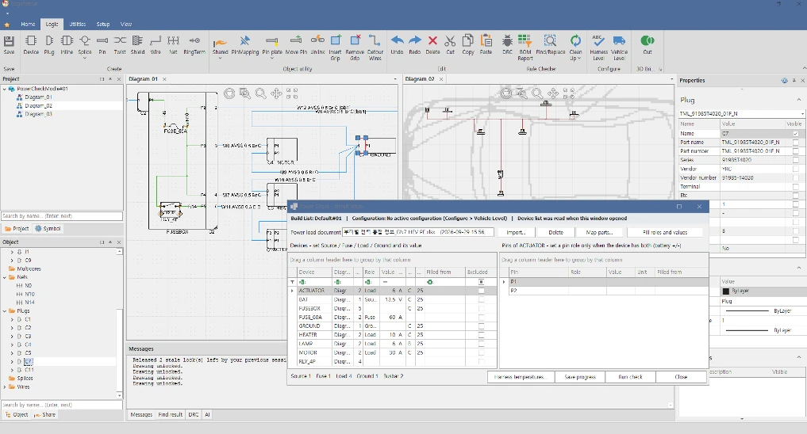
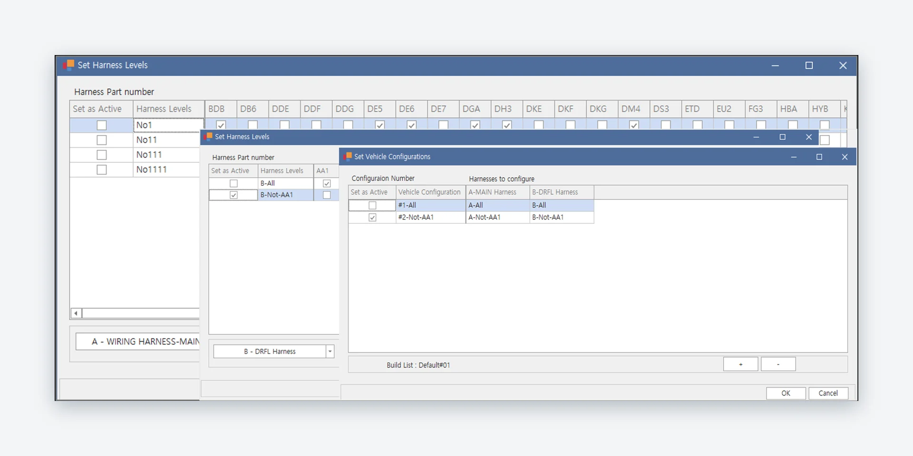
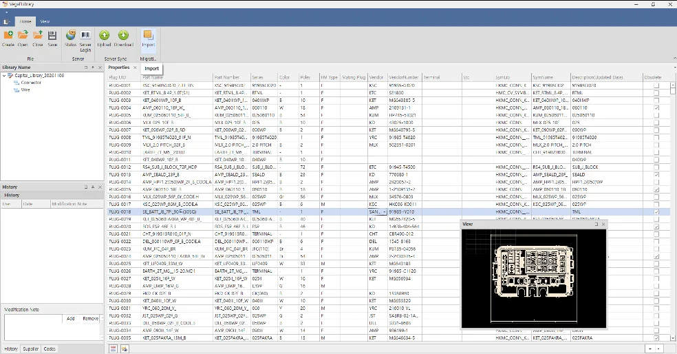
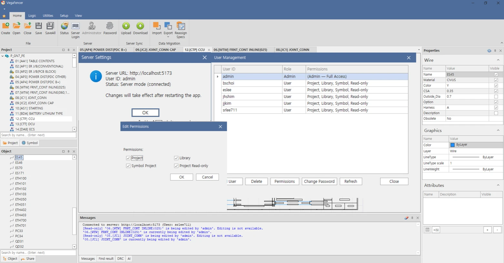
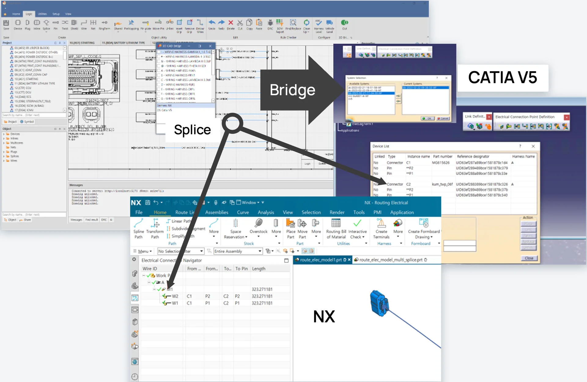

OVERVIEW
User Interface
세 가지의 모듈, 한 가지의 화면 구성
VegaFencer의 Logic, Integrator, Harness 모듈은 E/E 엔지니어에게 최적화된 화면구성을 제공합니다.
화면에 마우스를 올려 각 영역을 직접 살펴보세요.

MODULE 01
Logic
전기적 설계 의도의 Source of Truth
Logic은 시스템의 구성 요소들이 서로 어떤 관계로 연결되어야 하는지를 정의합니다.
하네스 설계의 기준이 되는 전기적 의도를 한곳에서 관리합니다.
- check 전기적 연결 정의
- check 기능 설계 표현
- check 설계 규칙과 전기적 제약
- check 단일 기준 데이터
MODULE 04
DRC / BOM
설계 규칙 검증과 BOM 리포트
DRC는 24개 설계 규칙으로 연결 누락과 데이터 불일치를 찾아냅니다.
BOM 리포트는 Variant·Option·Configuration별 와이어 리스트와 커넥터 리스트를 출력합니다.
- check Connectivity — 끊긴 연결과 미연결 오브젝트 검사
- check Consistency — 부품 번호·하네스 코드·옵션 일관성 검사
- check Naming — 이름 없는 와이어·커넥터·디바이스 검사
- check Variant·Option·Configuration별 와이어·커넥터 리스트
MODULE 05
Power Check
퓨즈 적합성과 전압 강하 검증
Power Check는 전원에서 접지까지 회로 연결을 추적해 전원 분배를 검증합니다.
번들 길이와 허용 전류를 반영해 퓨즈 적합성과 전압 강하를 확인합니다.
- check 와이어 리스트·넷 리스트로 전원에서 접지까지 회로 추적
- check 부하 타입과 전류값 일괄 설정
- check 번들 내 와이어 수에 따른 허용 전류(Ampacity) 반영
- check DRC 메시지 창에서 검증 근거와 회로 추적

MODULE 06
Variant / Option Configuration
사양·옵션별 구성 관리
하네스 레벨마다 Variant·Option을 구성하고, 하네스 조합으로 차량 구성을 정의합니다.
Worst-case 설계 안에서 선택한 구성에 해당하는 내용만 화면에 표시합니다.
- check Harness Level별 Variant/Option 구성
- check Vehicle Configuration — 하네스 조합 관리
- check 선택한 구성으로 다이어그램과 토폴로지 필터링
- check 구성별 BOM 리포트와 Power Check 적용

MODULE 07
Library / Symbol Editor
표준 라이브러리와 심볼 공유
Library / Symbol Editor는 서버에 접속한 모든 사용자에게 표준화된 라이브러리와 심볼을 공유합니다.
수정과 변경은 Librarian 권한을 가진 사용자만 할 수 있습니다.
- check 핀·캐비티 속성 지정
- check DXF/DWG 포맷 가져오기
- check 서버에서 심볼 검색
- check 기존 라이브러리에 파트 추가 마이그레이션

MODULE 09
Multiuser Environment
팀 전체가 함께 설계하는 환경
Server/Client 환경에서 여러 사용자가 한 프로젝트를 동시에 설계합니다.
편집 중인 도면과 공유 커넥터의 핀 정보는 실시간으로 잠기고 공유됩니다.
- check 역할 & 설정 — Project 단위의 권한 부여 및 강제
- check 실시간 Diagram lock/unlock, Offpage Wire, 연계 작업 시간 공유
- check Shared Connector의 Pin Level Lock — 중복 사용 원천 방지
- check Enterprise급 PostgreSQL + ASP.NET Core (Kestrel) — Windows/Linux, Docker 배포

MODULE 10
3D CAD Bridge
3D CAD와의 양방향 상호운용성
Dassault Systèmes CATIA V5와 Siemens NX와의 상호운용성을 지원하여, 서로 다른 설계 환경 간에도 일관된 데이터 흐름을 유지합니다.
- check 와이어 리스트·번들 정보·번들 길이 데이터 양방향 교환
- check 설계 변경 사항의 정확한 반영으로 오류 최소화
- check 물리적 라우팅과 논리적 배선 정보의 연계 강화
- check 제조·조립 단계 오류 감소, 라이프사이클 데이터 일관성
